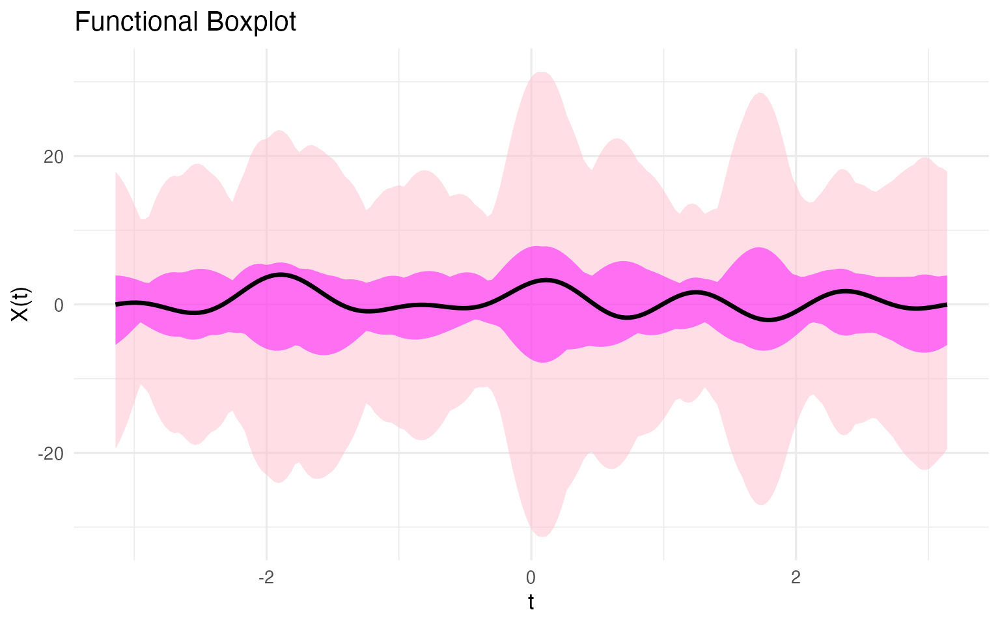
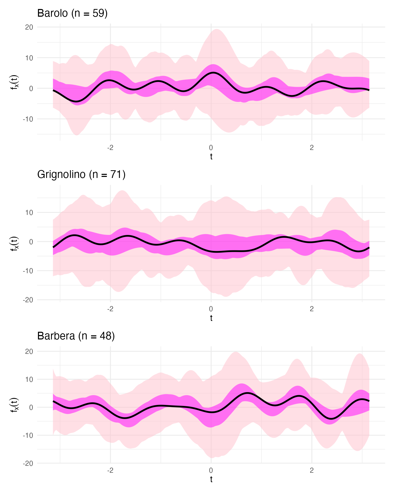
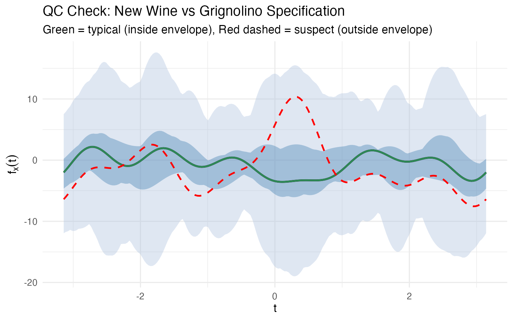
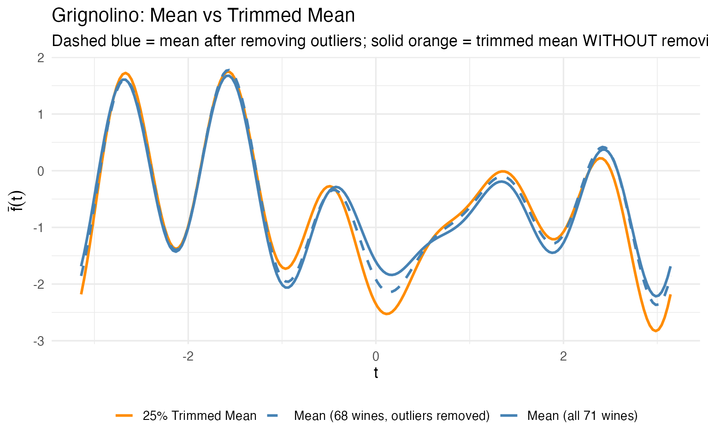
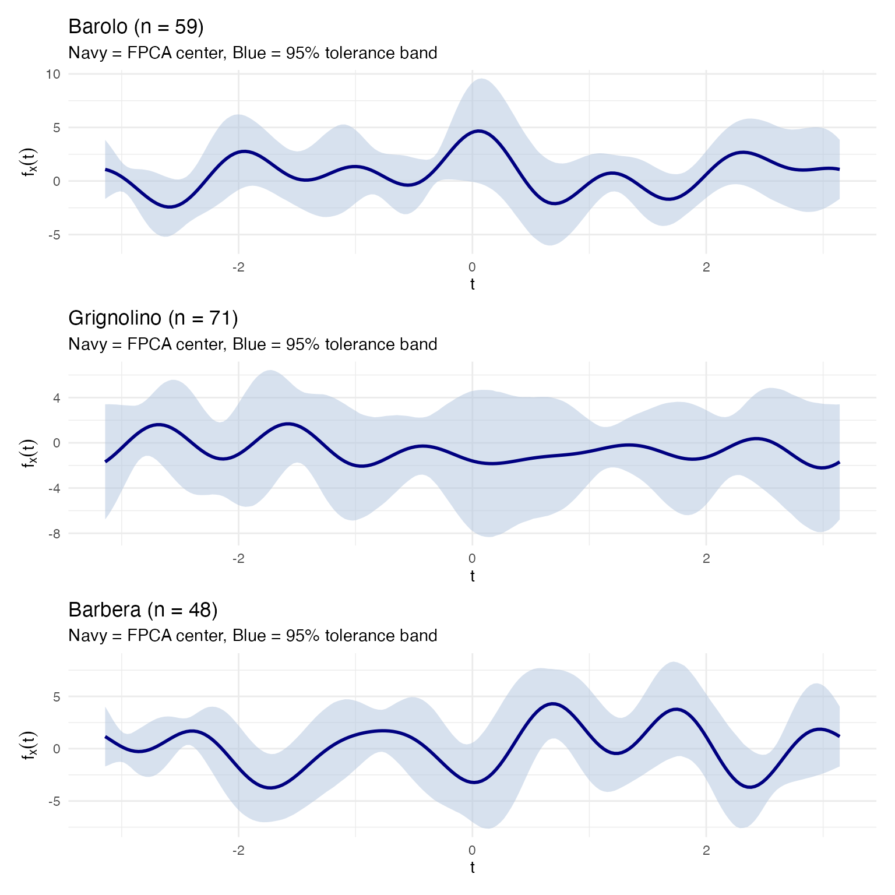
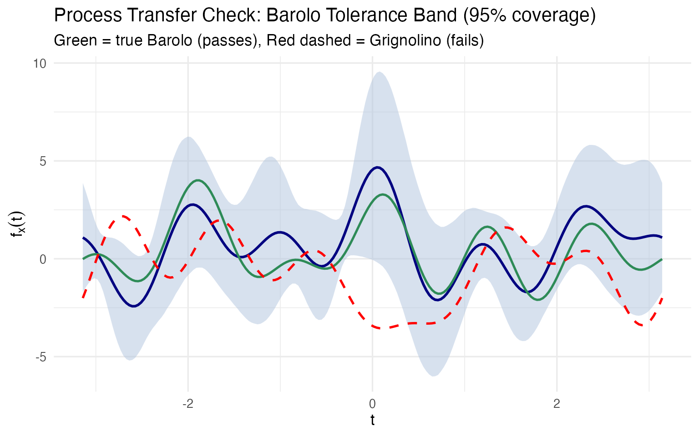
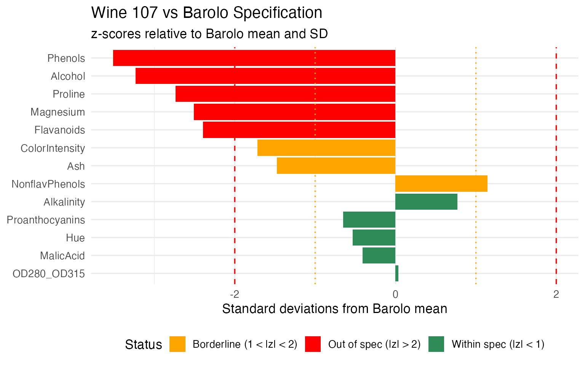
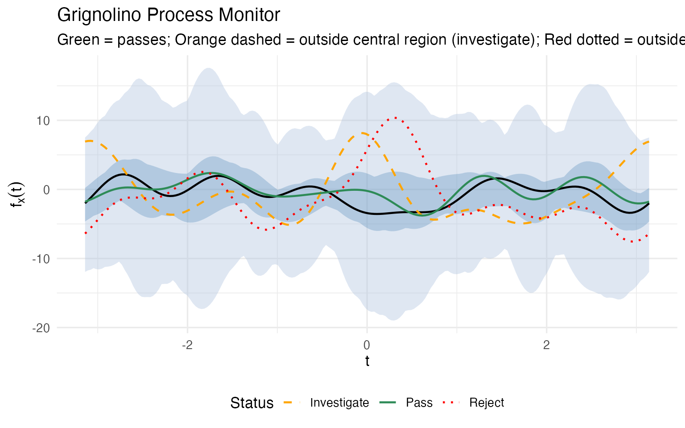
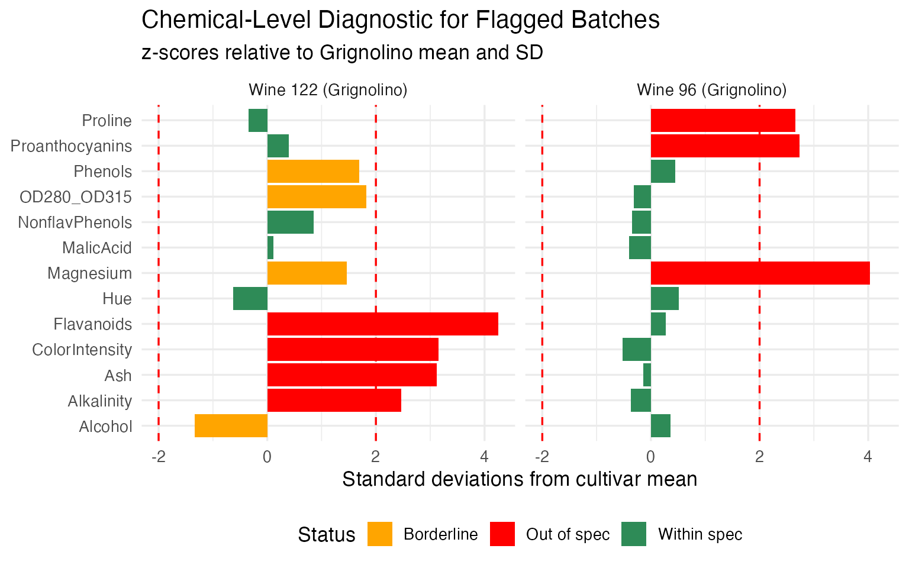

Andrews Wine: Quality Control
Source:vignettes/articles/example-andrews-wine-qc.Rmd
example-andrews-wine-qc.RmdThis article is part of a four-article series analyzing 178 wines (3 cultivars, 13 chemicals) with Andrews curves and functional data analysis. Each article is self-contained.
| Article | What It Does | Outcome |
|---|---|---|
| Why Andrews Curves? | Transform 13 chemicals into curves; verify distance preservation | Each wine becomes a visual fingerprint; distances preserved exactly |
| Outlier Detection | Depth, outliergram, MS-plot | 9 anomalies classified by type with corrective actions |
| Clustering & Variable Importance | K-means, fuzzy c-means, permutation test, FPCA | Cultivar recovery at 96% accuracy; top 5 chemicals identified |
| Quality Control (this article) | Functional boxplots, depth rankings, tolerance bands | Monitoring system: one chart checks all 13 chemicals simultaneously |
What you get from this article:
- Functional boxplot monitors all 13 chemicals in a single chart — replacing 13 separate control charts and catching unusual combinations that per-variable charts miss
- Depth ranking gives every wine a continuous typicality score, so the quality controller sets their own investigation threshold
- Trimmed mean provides a robust cultivar reference that resists contamination without manual outlier removal
- Three-phase monitoring workflow (validate, transfer, monitor) maps directly to the ICH Q8–Q12 process validation lifecycle
- Chemical-level diagnostics decompose every alert back to specific chemicals — not just “investigate” but “which assays to re-run”
# Load wine data
wine_url <- "https://archive.ics.uci.edu/ml/machine-learning-databases/wine/wine.data"
col_names <- c("Cultivar", "Alcohol", "MalicAcid", "Ash", "Alkalinity",
"Magnesium", "Phenols", "Flavanoids", "NonflavPhenols",
"Proanthocyanins", "ColorIntensity", "Hue",
"OD280_OD315", "Proline")
wine <- read.csv(wine_url, header = FALSE, col.names = col_names)
cultivar <- factor(wine$Cultivar, levels = 1:3,
labels = c("Barolo", "Grignolino", "Barbera"))
X <- scale(as.matrix(wine[, -1]))
chem_names <- colnames(wine)[-1]
# Andrews transform
fd_wine <- andrews_transform(X)
n <- nrow(fd_wine$data)
m <- ncol(fd_wine$data)
t_grid <- fd_wine$argvalsThe Functional Boxplot: A Cultivar Specification
Classical boxplots summarize one variable at a time. If you want to monitor 13 chemicals, you need 13 boxplots, and there’s no way to assess whether the combination of values is normal. The functional boxplot solves this: it defines a simultaneous envelope over all 13 chemicals (encoded in the curve), giving you a single visual that says “this is what a normal wine looks like.”
Overall Functional Boxplot
fbp <- boxplot(fd_wine)
fbp$plot
The median curve (black) is the most typical wine — the one with the highest functional depth. The darker blue band is the 50% central region: half of all wines fall within this envelope at every point. The lighter blue band extends to the fences (1.5x the envelope width); any wine whose curve escapes the fence at any Fourier frequency is automatically flagged.
Per-Cultivar Specifications
The overall boxplot mixes all three cultivars. For quality control, what you really want is a cultivar-specific specification — what should a typical Barolo, Grignolino, or Barbera look like?
bp_list <- list()
for (cv in levels(cultivar)) {
idx <- which(cultivar == cv)
fd_cv <- fd_wine[idx]
fbp_cv <- boxplot(fd_cv)
bp_list[[cv]] <- fbp_cv$plot +
labs(title = sprintf("%s (n = %d)", cv, length(idx)),
x = expression(t), y = expression(f[x](t)))
}
bp_list[["Barolo"]] / bp_list[["Grignolino"]] / bp_list[["Barbera"]]
These three boxplots define a visual specification for each cultivar. A quality controller can now take a new wine, compute its Andrews curve, and overlay it on the appropriate cultivar’s boxplot. If the curve falls within the central blue band, the wine is typical. If it escapes the fences, investigate.
Incoming Batch Monitoring
Let’s simulate this workflow. We take Wine 122 (a suspect Grignolino identified in the outlier analysis) and Wine 107 (the most typical Grignolino by depth) and check them against the Grignolino specification:
grig_idx <- which(cultivar == "Grignolino")
fd_grig <- fd_wine[grig_idx]
fbp_grig <- boxplot(fd_grig)
# Extract envelope and fence for custom overlay
df_envelope <- data.frame(
t = t_grid,
env_min = fbp_grig$envelope$min, env_max = fbp_grig$envelope$max,
fence_min = fbp_grig$fence$min, fence_max = fbp_grig$fence$max,
median_val = fd_grig$data[fbp_grig$median, ]
)
# Wine 122 and Wine 107 curves
df_check <- rbind(
data.frame(t = t_grid, value = fd_wine$data[122, ], Wine = "Wine 122 (suspect)"),
data.frame(t = t_grid, value = fd_wine$data[107, ], Wine = "Wine 107 (typical)")
)
ggplot() +
geom_ribbon(data = df_envelope, aes(x = t, ymin = fence_min, ymax = fence_max),
fill = "#B0C4DE", alpha = 0.4) +
geom_ribbon(data = df_envelope, aes(x = t, ymin = env_min, ymax = env_max),
fill = "steelblue", alpha = 0.4) +
geom_line(data = df_envelope, aes(x = t, y = median_val),
color = "black", linewidth = 1) +
geom_line(data = filter(df_check, Wine == "Wine 107 (typical)"),
aes(x = t, y = value), color = "#2E8B57", linewidth = 0.9) +
geom_line(data = filter(df_check, Wine == "Wine 122 (suspect)"),
aes(x = t, y = value), color = "red", linewidth = 0.9,
linetype = "dashed") +
labs(title = "QC Check: New Wine vs Grignolino Specification",
subtitle = "Green = typical (inside envelope), Red dashed = suspect (outside envelope)",
x = expression(t), y = expression(f[x](t)))
No 13-column spreadsheet comparison needed. One glance tells the story: Wine 107 traces the median closely; Wine 122’s curve departs from the envelope in several regions, particularly around where the and terms (encoding Malic Acid and Ash) dominate. This is a multivariate control chart — monitoring all 13 chemicals simultaneously in a single visual.
There is no simple classical equivalent. A 13-dimensional confidence ellipsoid exists mathematically, but you can’t plot it, you can’t show it to a plant manager, and you can’t point to the region where the wine deviates. The functional boxplot does all three.
Depth as a Typicality Score
Functional depth gives every wine a scalar typicality score within its cultivar. This is a concept with no clean classical equivalent — it simultaneously accounts for all 13 chemicals without requiring a parametric model or covariance matrix inversion.
# Compute within-cultivar depth rankings
depth_rankings <- lapply(levels(cultivar), function(cv) {
idx <- which(cultivar == cv)
fd_cv <- fd_wine[idx]
depths <- depth.MBD(fd_cv)
data.frame(
Wine = idx,
Cultivar = cv,
Depth = round(depths, 4),
Rank = rank(-depths)
)
})
df_depths <- bind_rows(depth_rankings)
# Show top 3 and bottom 3 per cultivar
top_bottom <- df_depths |>
group_by(Cultivar) |>
arrange(Rank) |>
slice(c(1:3, (n()-2):n())) |>
mutate(Status = ifelse(Rank <= 3, "Most typical", "Least typical"))
kable(top_bottom |> select(Cultivar, Wine, Depth, Rank, Status),
caption = "Most and least typical wines per cultivar (by functional depth)")| Cultivar | Wine | Depth | Rank | Status |
|---|---|---|---|---|
| Barbera | 175 | 0.4756 | 1 | Most typical |
| Barbera | 149 | 0.4734 | 2 | Most typical |
| Barbera | 164 | 0.4311 | 3 | Most typical |
| Barbera | 153 | 0.2874 | 46 | Least typical |
| Barbera | 160 | 0.2434 | 47 | Least typical |
| Barbera | 159 | 0.1980 | 48 | Least typical |
| Barolo | 58 | 0.4351 | 1 | Most typical |
| Barolo | 49 | 0.4321 | 2 | Most typical |
| Barolo | 36 | 0.4084 | 3 | Most typical |
| Barolo | 40 | 0.2640 | 57 | Least typical |
| Barolo | 15 | 0.2370 | 58 | Least typical |
| Barolo | 26 | 0.1994 | 59 | Least typical |
| Grignolino | 107 | 0.4394 | 1 | Most typical |
| Grignolino | 82 | 0.4377 | 2 | Most typical |
| Grignolino | 118 | 0.4360 | 3 | Most typical |
| Grignolino | 70 | 0.2244 | 69 | Least typical |
| Grignolino | 96 | 0.2086 | 70 | Least typical |
| Grignolino | 122 | 0.1938 | 71 | Least typical |
The “most typical” wines are the ones a sommelier would call textbook examples of their cultivar. The “least typical” wines — 122, 96, 70 for Grignolino; 159 for Barbera — are exactly the ones the outlier analysis flagged. Depth provides a continuous ranking, not a binary flag, so the quality controller can set their own threshold: investigate the bottom 5%? The bottom 10%?
Robust Location: Trimmed Mean vs Ordinary Mean
Depth also enables robust estimation. The trimmed mean discards the shallowest curves (the most atypical wines) before averaging, giving a center estimate that resists contamination:
fd_grig <- fd_wine[which(cultivar == "Grignolino")]
# Full sample estimates
fn_mean_full <- mean(fd_grig)
fn_trimmed_full <- trimmed(fd_grig, trim = 0.25)
# Remove 3 most extreme outliers and recompute
grig_clean <- setdiff(which(cultivar == "Grignolino"), c(70, 96, 122))
fd_grig_clean <- fd_wine[grig_clean]
fn_mean_clean <- mean(fd_grig_clean)
fn_trimmed_clean <- trimmed(fd_grig_clean, trim = 0.25)
# Measure how much each shifted
mean_shift <- sqrt(sum((fn_mean_full$data - fn_mean_clean$data)^2) *
diff(t_grid[1:2]))
trimmed_shift <- sqrt(sum((fn_trimmed_full$data - fn_trimmed_clean$data)^2) *
diff(t_grid[1:2]))
cat(sprintf("Removing 3 extreme Grignolino outliers (wines 70, 96, 122):\n"))
#> Removing 3 extreme Grignolino outliers (wines 70, 96, 122):
cat(sprintf(" Mean curve shifted by: %.2f\n", mean_shift))
#> Mean curve shifted by: 0.32
cat(sprintf(" 25%% trimmed mean shifted by: %.2f\n", trimmed_shift))
#> 25% trimmed mean shifted by: 0.22
cat(sprintf(" Trimmed mean is %.0f%% more stable\n",
100 * (mean_shift - trimmed_shift) / mean_shift))
#> Trimmed mean is 33% more stable
df_robust <- rbind(
data.frame(t = t_grid, value = as.numeric(fn_mean_full$data),
Estimator = "Mean (all 71 wines)"),
data.frame(t = t_grid, value = as.numeric(fn_trimmed_full$data),
Estimator = "25% Trimmed Mean"),
data.frame(t = t_grid, value = as.numeric(fn_mean_clean$data),
Estimator = "Mean (68 wines, outliers removed)")
)
ggplot(df_robust, aes(x = t, y = value, color = Estimator, linetype = Estimator)) +
geom_line(linewidth = 1) +
scale_color_manual(values = c("Mean (all 71 wines)" = "steelblue",
"25% Trimmed Mean" = "darkorange",
"Mean (68 wines, outliers removed)" = "steelblue")) +
scale_linetype_manual(values = c("Mean (all 71 wines)" = "solid",
"25% Trimmed Mean" = "solid",
"Mean (68 wines, outliers removed)" = "dashed")) +
labs(title = "Grignolino: Mean vs Trimmed Mean",
subtitle = "Dashed blue = mean after removing outliers; solid orange = trimmed mean WITHOUT removing them",
x = expression(t), y = expression(bar(f)(t))) +
theme(legend.position = "bottom",
legend.title = element_blank())
The trimmed mean (orange) computed on all 71 Grignolinos is close to the ordinary mean computed after manually removing outliers (dashed blue). The trimmed mean achieves robustness automatically — no need to first detect outliers and then decide which to remove. For a production pipeline where you can’t manually curate every batch, this is a significant practical advantage.
From Validation to Monitoring
So far we have tools for retrospective analysis. But a quality lab doesn’t analyze the same 178 wines forever. New batches arrive every week. The real question is: can we turn this analysis into an ongoing monitoring system?
The answer is yes, and the functional framework makes it natural. The workflow has three phases.
Phase 1: Establish the Reference (Process Validation)
During process validation, you collect a representative set of wines for each cultivar and compute the reference profile: the center curve and a tolerance band that captures the expected range of normal variation.
Why Tolerance Intervals, Not Prediction Intervals?
A prediction interval covers the next single observation with a given probability (e.g., 95%). A tolerance interval is stronger: it guarantees that at least a specified proportion of the population (e.g., 95%) falls within the band, with a given confidence level (e.g., 95%). The dual coverage makes tolerance intervals the correct tool for quality specifications:
| Prediction interval | Tolerance interval | |
|---|---|---|
| Covers | The next observation | A fraction of the population |
| Guarantee | 95% chance the next point is inside | 95% confident that $$95% of population is inside |
| Use case | “Is this one wine normal?” | “Does this band define normal?” |
| QC role | Ad hoc checking | Specification limits |
When you define a cultivar specification — “a normal Barolo should fall in this band” — you need the tolerance interpretation. A prediction band can be too narrow (it only covers one observation, not the population), leading to excessive false alarms. Tolerance bands are wider by construction, giving a proper acceptance region.
We compute tolerance bands using tolerance.band(), which
uses FPCA-based bootstrap to construct bands with the requested
population coverage:
tol_plots <- list()
for (cv in levels(cultivar)) {
idx <- which(cultivar == cv)
fd_cv <- fd_wine[idx]
# Compute tolerance band: 95% coverage, FPCA + bootstrap
tband <- tolerance.band(fd_cv, method = "fpca", coverage = 0.95,
ncomp = 5, nb = 500, seed = 42)
df_band <- data.frame(
t = t_grid,
center = tband$center,
lower = tband$lower,
upper = tband$upper
)
tol_plots[[cv]] <- ggplot(df_band, aes(x = t)) +
geom_ribbon(aes(ymin = lower, ymax = upper),
fill = "#B0C4DE", alpha = 0.5) +
geom_line(aes(y = center), color = "navy", linewidth = 1) +
labs(title = sprintf("%s (n = %d)", cv, length(idx)),
subtitle = "Navy = FPCA center, Blue = 95% tolerance band",
x = expression(t), y = expression(f[x](t))) +
theme_minimal()
}
tol_plots[["Barolo"]] / tol_plots[["Grignolino"]] / tol_plots[["Barbera"]]
The blue band is the 95% tolerance band: we are
confident that at least 95% of all wines from this cultivar will produce
Andrews curves inside it. This is the operational acceptance criterion:
any new wine whose curve stays entirely inside the band passes. Because
tolerance.band() accounts for estimation uncertainty
through bootstrap, the band is appropriately wider than a naive
pointwise interval.
Phase 2: Process Transfer
When a process is transferred — to a new vineyard, a new fermentation facility, or a new analytical lab — you need to verify that the new process produces wines within the validated specification. The tolerance band provides the acceptance region: if the new wine’s Andrews curve falls inside it, the wine is consistent with the reference population.
The key advantage of the functional approach is that when a wine fails, you can trace back to which chemicals caused the deviation. Because the Andrews curve maps each Fourier frequency to specific input variables, a violation at a particular region of the curve implicates specific chemicals:
# Compute the tolerance band for Barolo
barolo_idx <- which(cultivar == "Barolo")
fd_barolo <- fd_wine[barolo_idx]
tband_barolo <- tolerance.band(fd_barolo, method = "fpca", coverage = 0.95,
ncomp = 5, nb = 500, seed = 42)
df_barolo_band <- data.frame(
t = t_grid,
center = tband_barolo$center,
lower = tband_barolo$lower,
upper = tband_barolo$upper
)
# Test wines: a true Barolo (wine 36, typical) and a Grignolino (wine 107)
df_test_wines <- rbind(
data.frame(t = t_grid, value = fd_wine$data[36, ],
Wine = "Wine 36 (Barolo — typical)"),
data.frame(t = t_grid, value = fd_wine$data[107, ],
Wine = "Wine 107 (Grignolino)")
)
# Check which wines stay inside the tolerance band
for (w in c(36, 107)) {
inside <- all(fd_wine$data[w, ] >= tband_barolo$lower &
fd_wine$data[w, ] <= tband_barolo$upper)
cat(sprintf("Wine %d (%s): %s Barolo tolerance band\n",
w, cultivar[w], ifelse(inside, "INSIDE", "OUTSIDE")))
}
#> Wine 36 (Barolo): INSIDE Barolo tolerance band
#> Wine 107 (Grignolino): OUTSIDE Barolo tolerance band
ggplot() +
geom_ribbon(data = df_barolo_band,
aes(x = t, ymin = lower, ymax = upper),
fill = "#B0C4DE", alpha = 0.5) +
geom_line(data = df_barolo_band, aes(x = t, y = center),
color = "navy", linewidth = 1) +
geom_line(data = filter(df_test_wines, Wine == "Wine 36 (Barolo — typical)"),
aes(x = t, y = value), color = "#2E8B57", linewidth = 0.9) +
geom_line(data = filter(df_test_wines, Wine == "Wine 107 (Grignolino)"),
aes(x = t, y = value), color = "red", linewidth = 0.9,
linetype = "dashed") +
labs(title = "Process Transfer Check: Barolo Tolerance Band (95% coverage)",
subtitle = "Green = true Barolo (passes), Red dashed = Grignolino (fails)",
x = expression(t), y = expression(f[x](t)))
A true Barolo stays inside the blue tolerance band; a Grignolino immediately violates it. But the critical follow-up question is: which chemicals caused the failure? Because we preserved the mapping between curve and original variables, we can answer this directly:
# Compare wine 107 (Grignolino) against Barolo reference ranges
barolo_means <- colMeans(X[barolo_idx, ])
barolo_sds <- apply(X[barolo_idx, ], 2, sd)
wine107_z <- (X[107, ] - barolo_means) / barolo_sds
df_diag <- data.frame(
Chemical = chem_names,
z_score = as.numeric(wine107_z)
) |>
dplyr::mutate(
Status = dplyr::case_when(
abs(z_score) > 2 ~ "Out of spec (|z| > 2)",
abs(z_score) > 1 ~ "Borderline (1 < |z| < 2)",
TRUE ~ "Within spec (|z| < 1)"
),
Chemical = factor(Chemical, levels = Chemical[order(abs(z_score))])
)
ggplot(df_diag, aes(x = Chemical, y = z_score, fill = Status)) +
geom_col() +
geom_hline(yintercept = c(-2, 2), linetype = "dashed", color = "red") +
geom_hline(yintercept = c(-1, 1), linetype = "dotted", color = "orange") +
coord_flip() +
scale_fill_manual(values = c("Out of spec (|z| > 2)" = "red",
"Borderline (1 < |z| < 2)" = "orange",
"Within spec (|z| < 1)" = "#2E8B57")) +
labs(title = "Wine 107 vs Barolo Specification",
subtitle = "z-scores relative to Barolo mean and SD",
x = NULL, y = "Standard deviations from Barolo mean") +
theme(legend.position = "bottom")
# Report the failing chemicals
failing <- df_diag |> dplyr::filter(abs(z_score) > 2) |>
dplyr::arrange(dplyr::desc(abs(z_score)))
cat("Chemicals out of spec (|z| > 2):\n")
#> Chemicals out of spec (|z| > 2):
for (i in seq_len(nrow(failing))) {
cat(sprintf(" %s: z = %+.1f (%s Barolo range)\n",
failing$Chemical[i], failing$z_score[i],
ifelse(failing$z_score[i] > 0, "above", "below")))
}
#> Phenols: z = -3.5 (below Barolo range)
#> Alcohol: z = -3.2 (below Barolo range)
#> Proline: z = -2.7 (below Barolo range)
#> Magnesium: z = -2.5 (below Barolo range)
#> Flavanoids: z = -2.4 (below Barolo range)This is the operational payoff: not just “this wine fails the Barolo check” but “it fails because its Flavanoids are too low and its Color Intensity is too high” — actionable information that tells the lab exactly what to re-test or the quality manager what went wrong in production.
Phase 3: Ongoing Process Monitoring
Once the process is validated, monitoring becomes routine. Each new batch is:
- Measured for the 13 chemicals (or the reduced set identified by FPCA)
- Transformed into an Andrews curve
- Checked against the cultivar-specific tolerance band and the functional boxplot fences
# Build the monitoring view: functional boxplot + incoming wines
grig_idx <- which(cultivar == "Grignolino")
fd_grig <- fd_wine[grig_idx]
fbp_grig <- boxplot(fd_grig)
df_monitor <- data.frame(
t = t_grid,
env_min = fbp_grig$envelope$min, env_max = fbp_grig$envelope$max,
fence_min = fbp_grig$fence$min, fence_max = fbp_grig$fence$max,
median_val = fd_grig$data[fbp_grig$median, ]
)
# "Incoming" wines: one normal, one outlier, one mislabeled
incoming <- rbind(
data.frame(t = t_grid, value = fd_wine$data[82, ],
Wine = "Batch A (normal)", Status = "Pass"),
data.frame(t = t_grid, value = fd_wine$data[96, ],
Wine = "Batch B (Mg outlier)", Status = "Investigate"),
data.frame(t = t_grid, value = fd_wine$data[122, ],
Wine = "Batch C (mislabel?)", Status = "Reject")
)
ggplot() +
geom_ribbon(data = df_monitor, aes(x = t, ymin = fence_min, ymax = fence_max),
fill = "#B0C4DE", alpha = 0.4) +
geom_ribbon(data = df_monitor, aes(x = t, ymin = env_min, ymax = env_max),
fill = "steelblue", alpha = 0.3) +
geom_line(data = df_monitor, aes(x = t, y = median_val),
color = "black", linewidth = 0.8) +
geom_line(data = incoming,
aes(x = t, y = value, color = Status, linetype = Status),
linewidth = 0.8) +
scale_color_manual(values = c("Pass" = "#2E8B57", "Investigate" = "orange",
"Reject" = "red")) +
scale_linetype_manual(values = c("Pass" = "solid", "Investigate" = "dashed",
"Reject" = "dotted")) +
labs(title = "Grignolino Process Monitor",
subtitle = "Green = passes; Orange dashed = outside central region (investigate); Red dotted = outside envelope (reject)",
x = expression(t), y = expression(f[x](t))) +
theme(legend.position = "bottom")
Again, the crucial advantage is that a monitoring alert doesn’t end with “investigate” — it tells you which chemicals are driving the deviation. For each flagged batch, we can decompose the alert back into the original measurement space:
# For the flagged wines (96 = investigate, 122 = reject), compute z-scores
# relative to Grignolino reference
grig_means <- colMeans(X[grig_idx, ])
grig_sds <- apply(X[grig_idx, ], 2, sd)
diag_list <- list()
for (w in c(96, 122)) {
wz <- (X[w, ] - grig_means) / grig_sds
diag_list[[as.character(w)]] <- data.frame(
Chemical = chem_names,
z_score = as.numeric(wz),
Wine = sprintf("Wine %d (%s)", w, cultivar[w])
)
}
df_mon_diag <- do.call(rbind, diag_list) |>
dplyr::mutate(
Status = dplyr::case_when(
abs(z_score) > 2 ~ "Out of spec",
abs(z_score) > 1 ~ "Borderline",
TRUE ~ "Within spec"
)
)
ggplot(df_mon_diag, aes(x = Chemical, y = z_score, fill = Status)) +
geom_col() +
geom_hline(yintercept = c(-2, 2), linetype = "dashed", color = "red") +
coord_flip() +
scale_fill_manual(values = c("Out of spec" = "red",
"Borderline" = "orange",
"Within spec" = "#2E8B57")) +
facet_wrap(~ Wine) +
labs(title = "Chemical-Level Diagnostic for Flagged Batches",
subtitle = "z-scores relative to Grignolino mean and SD",
x = NULL, y = "Standard deviations from cultivar mean") +
theme(legend.position = "bottom")
Wine 96 (the “Investigate” batch) has a small number of chemicals pulling it outside the central region — the alert is localized, and the quality team knows exactly which assays to re-run. Wine 122 (the “Reject” batch) deviates on a broad set of chemicals in a pattern consistent with a different cultivar entirely — confirming the mislabeling hypothesis from the outlier analysis.
This is the operational payoff of the entire pipeline. The validation phase produces the reference profiles, tolerance bands, and decision rules. The monitoring phase applies them to every new batch with a single curve overlay plus a chemical-level breakdown when something goes wrong. The quality controller doesn’t need to understand Fourier analysis or functional depth — they see a curve, a band, a red/yellow/green signal, and a bar chart telling them which chemicals to investigate.
For regulated industries, this workflow maps directly to the process validation lifecycle (ICH Q8-Q12, FDA guidance):
- Stage 1 (Process Design): FPCA identifies critical quality attributes (which chemicals matter); clustering validates groupings
- Stage 2 (Process Qualification): tolerance bands define acceptance criteria with guaranteed population coverage; the permutation test provides statistical evidence of cultivar distinctness
- Stage 3 (Continued Process Verification): the functional boxplot serves as the ongoing control chart; depth ranking flags drifting batches before they exceed limits; chemical-level diagnostics pinpoint root causes
So Why Not Just Use Standard Statistics?
The QC methods demonstrated here have classical counterparts. Here’s what the functional approach adds:
| Task | Classical Method | What FDA Adds |
|---|---|---|
| Quality monitoring | Per-variable control charts (13 separate charts) | Functional boxplot: one chart monitoring all 13 chemicals simultaneously |
| Robust estimation | Trimmed column means (per variable) | Depth-based trimmed mean: robust center that respects multivariate structure |
| Outlier detection | Mahalanobis distance | Three methods classifying the TYPE of outlier (magnitude vs shape vs rank) |
| Hypothesis testing | MANOVA (assumes multivariate normality) | Nonparametric permutation test; bootstrap CIs showing WHERE profiles diverge |
The functional boxplot is the standout: it monitors all 13 chemicals in one chart, catching unusual combinations that per-variable charts miss.
What’s Next?
The other articles in this series:
Why Andrews Curves?: The starting point — why transform 13 chemicals into curves, and the distance preservation proof.
Outlier Detection: Three complementary methods classify 9 anomalies by type with specific corrective actions.
Clustering & Variable Importance: K-means, fuzzy c-means, FPCA, and permutation testing.